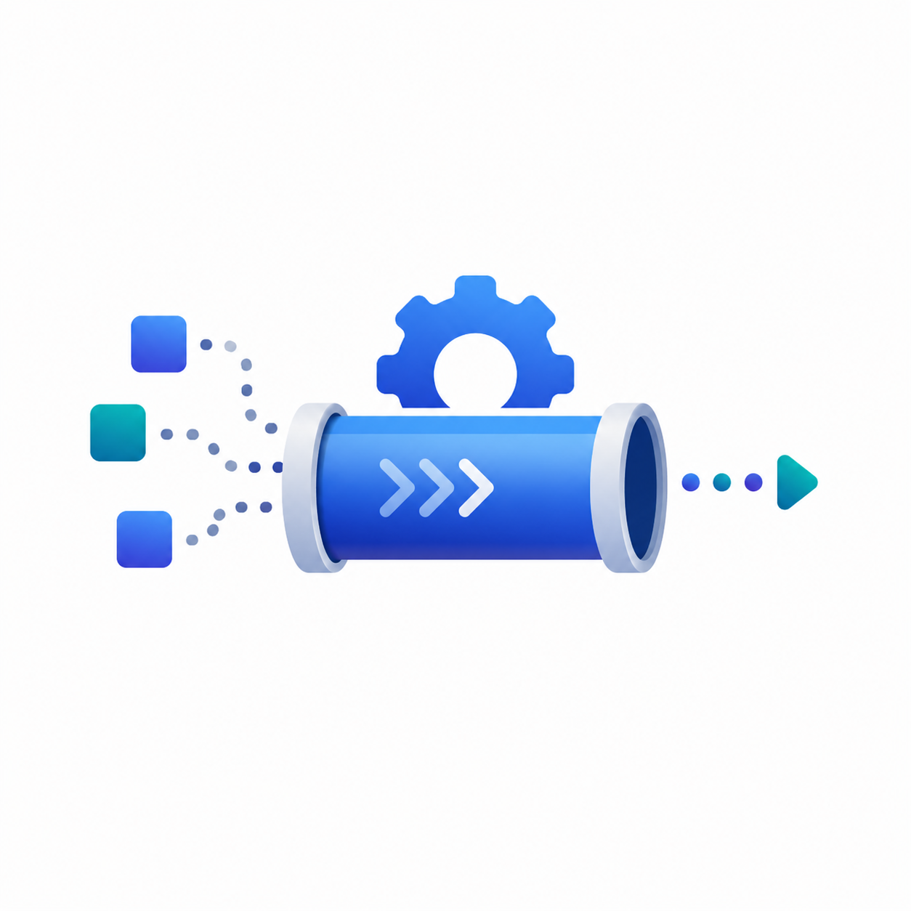
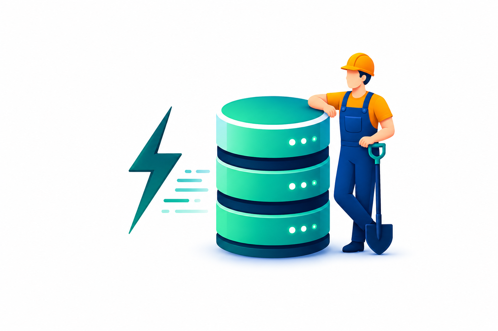
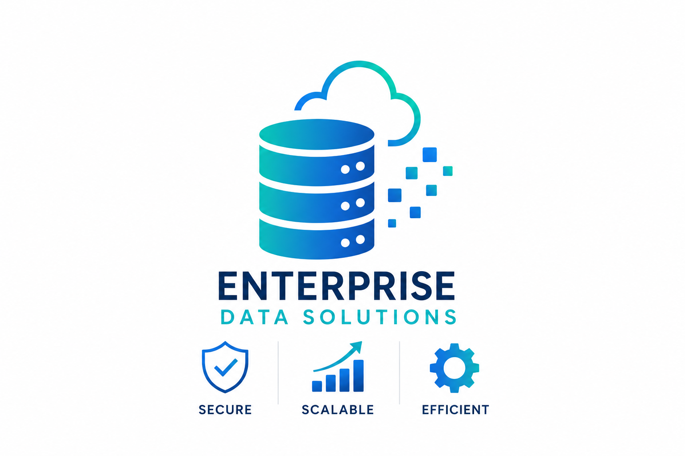
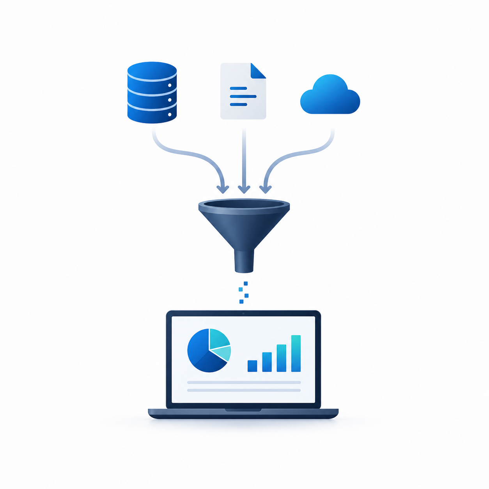
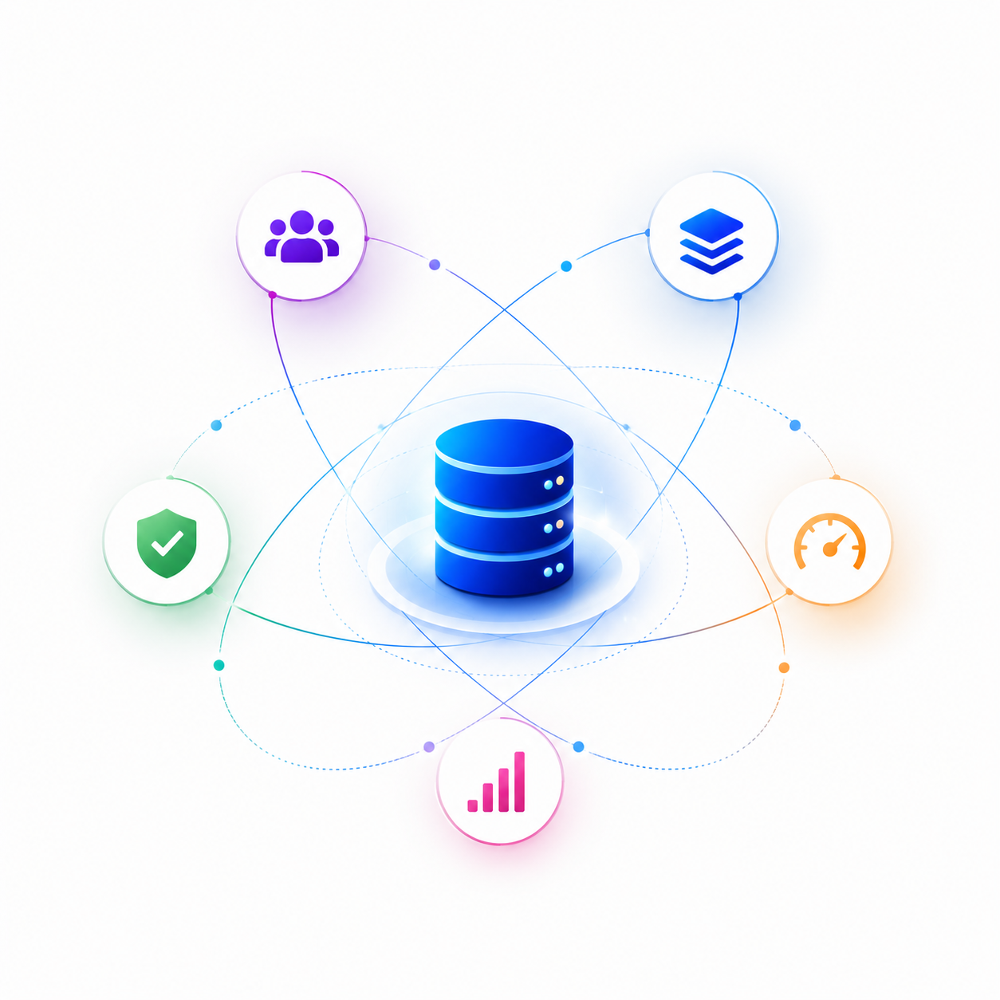
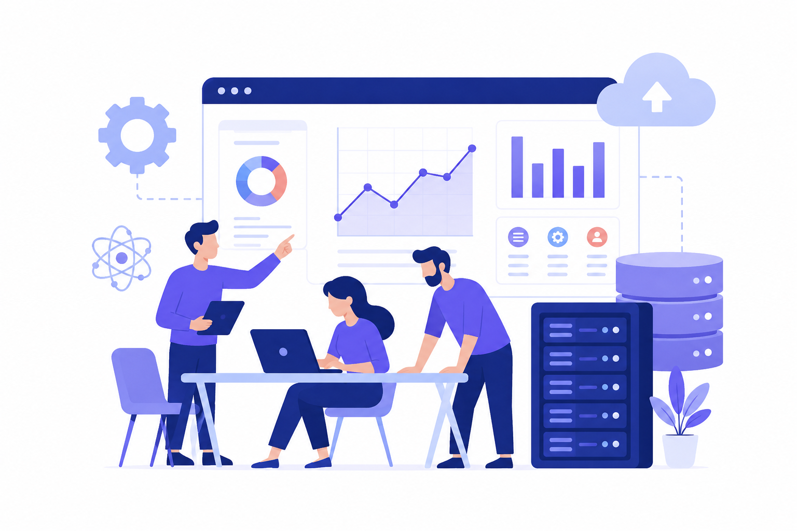
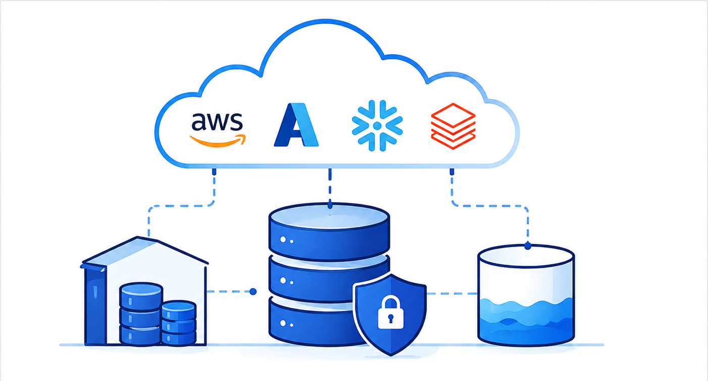
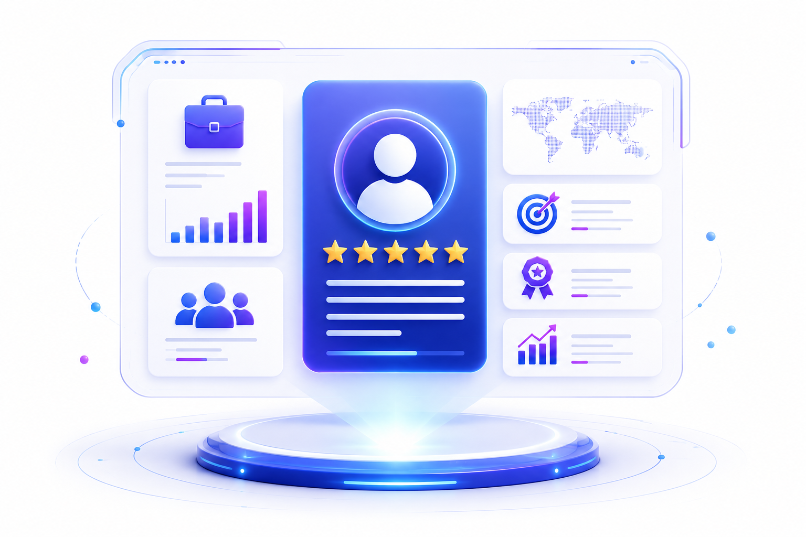

BlueConic
July 2023 – PresentLead Data Engineer
Enterprise lakehouse architecture, real-time customer data, governance and leadership of 12 data engineers.
Building modern data platforms, real-time pipelines, cloud analytics, and trusted healthcare and customer data solutions.
Reliable by design. Built to scale.
Delivering scalable data engineering and cloud solutions with 10+ years of experience.
Lead Data Engineer with 10+ years of experience designing, modernizing and optimizing enterprise data platforms across healthcare, technology and customer analytics environments. I build cloud data architectures, lakehouses and scalable ETL/ELT solutions across AWS, Azure and GCP.
My expertise spans Python, SQL, PySpark, Databricks, Snowflake and Apache Spark, alongside Kafka streaming, CDC integrations and Palantir Foundry. I specialize in healthcare interoperability, EHR/EMR integration, HL7/FHIR standards and HIPAA-compliant data engineering.
I lead and mentor engineering teams, establish data governance and reliability frameworks, and translate complex business requirements into sustainable, high-impact data solutions.
Years of Experience
Daily Data Processed
Daily Customer Events
Engineers Led
Core technologies, platforms, and domain expertise in data engineering.
Scalable, cloud-native, and analytics-driven data solutions for modern businesses.

Reliable ETL/ELT pipelines for seamless data integration and processing.
Reusable ingestion frameworks, incremental processing and orchestrated transformations using Python, PySpark, Airflow and dbt.
Reusable ingestion frameworks, incremental processing and orchestrated transformations using Python, PySpark, Airflow and dbt.
Scalable cloud architectures using AWS, Azure, Snowflake, and Databricks.
Cloud-native lakehouse platforms with Delta Lake, Medallion Architecture and governed enterprise data products.
Cloud-native lakehouse platforms with Delta Lake, Medallion Architecture and governed enterprise data products.

High-performance warehouses and dashboards for business insights.
Dimensional models, star schemas and SCD transformations for consistent reporting and efficient analytics.
Dimensional models, star schemas and SCD transformations for consistent reporting and efficient analytics.

Secure clinical data integration and Patient 360 analytics.
HL7, FHIR, ADT and EHR/EMR integrations with PHI/PII protection, encryption and access controls.
HL7, FHIR, ADT and EHR/EMR integrations with PHI/PII protection, encryption and access controls.

Automated workflows and efficient system integration.
CDC ingestion with Debezium and Kafka Connect, schema evolution and reliable source-to-target reconciliation.
CDC ingestion with Debezium and Kafka Connect, schema evolution and reliable source-to-target reconciliation.

Real-time and batch data processing architectures.
Distributed Apache Spark and Kafka streaming systems with performance tuning, monitoring and automated quality checks.
Distributed Apache Spark and Kafka streaming systems with performance tuning, monitoring and automated quality checks.
Explore enterprise-grade data engineering and analytics solutions.

A unified lakehouse for real-time customer intelligence.
Integrated 35+ sources across AWS and Azure, processing 8+ TB daily and 15M+ customer events. CDC pipelines reduced end-to-end latency by 65%.
Integrated 35+ sources across AWS and Azure, processing 8+ TB daily and 15M+ customer events. CDC pipelines reduced end-to-end latency by 65%.

Secure integration for trusted healthcare analytics.
Connected 25+ healthcare sources and consolidated 12M+ patient records with HL7/FHIR interoperability. Optimized workloads improved query performance by 50%.
Connected 25+ healthcare sources and consolidated 12M+ patient records with HL7/FHIR interoperability. Optimized workloads improved query performance by 50%.

Scalable enterprise integration and business intelligence.
Consolidated 20+ enterprise applications and processed 2+ TB daily. Spark transformations and automated orchestration reduced batch time by 40% and manual intervention by 55%.
Consolidated 20+ enterprise applications and processed 2+ TB daily. Spark transformations and automated orchestration reduced batch time by 40% and manual intervention by 55%.
Organizations where I contributed to scalable data and cloud platforms.
Lead Data Engineer
Enterprise lakehouse architecture, real-time customer data, governance and leadership of 12 data engineers.
Senior Data Engineer
Healthcare integration, HIPAA-aligned pipelines, Patient 360 analytics and Snowflake optimization.
Data Engineer
AWS data integration, distributed Spark transformations, dimensional modeling and workflow automation.
ETL Developer
Enterprise ETL, SQL optimization, Hadoop processing and data quality controls.
Let's connect to discuss data platforms, engineering, and analytics.
Edison, NJ, 08817, US
Bachelor of Science in Computer Science
Community College of Philadelphia